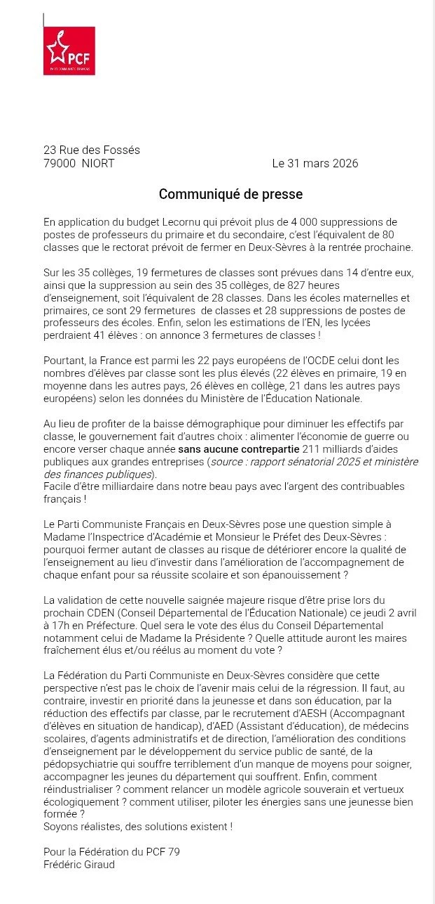

Communiqué fédéral
Deux-Sèvres. Pour une école publique forte, contre les fermetures de classes
Date indiquée par Facebook · 2 avril 2026
Repères éditoriaux
Dans notre communiqué du 31 mars, nous interpellons l’inspectrice d’académie et le préfet des Deux-Sèvres sur les suppressions de postes et les fermetures de classes annoncées pour la rentrée. Nous demandons de réduire les effectifs par classe, de recruter et de mieux accompagner chaque enfant. L’école publique a besoin de moyens.
Texte conservé avec la publication
Pour une école publique forte et ambitieuse ! Contre les suppressions de postes et les fermetures de classes.
Question du PCF 79 à Mme l'Inspectrice d'Académie et à Mr le Préfet des Deux-Sèvres.

Sources
Archive rouge · export Facebook · AR-0002-FB-00828
À lire aussi · Coupes budgétaires : le sacrifice de la recherche et l’enseignement supérieur public · Le lien d’origine